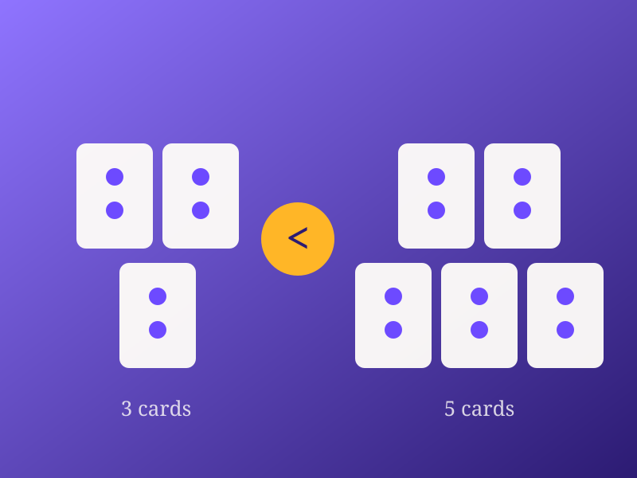

01 — Inklings®
A game of memory, fun, math, and more.
Fifty-four cards. Two to six players. Twenty minutes. Keep your hand a secret, dodge the Inky, and finish with the highest score.
The origin
Two kids, one very long spring.
In April 2020, Joshua and Lauren Dixon’s school year ended early. They got tired of the same family card games and decided to make something better — something fun, different, and actually engaging, that would also make kids better at math.
Lauren taught herself to draw so she could design the characters. Joshua worked out the game play. Together they argued over what each card should be worth, which characters made the final deck, and how to make sure the cast looked like everyone who would play it. Then they packed and shipped the orders themselves, after school.
Inklings was featured on Good Morning America. More than a thousand copies have sold across the United States, and 85% of buyers have rated it four or five stars.
“We wanted to create something that was fun, different and engaging — and we wanted kids to have fun with their families and get better at math.”
How to play
Easy to learn. Hard to stop.
Shuffle, deal five cards to each player, and stack the rest face down as the draw pile. On your turn, take the top card and decide what to do with it.
Swap and discard
Exchange the new card for one already in your hand, and put the old one on the discard pile. More is more — every card carries a value on its face.
Play a Joker
Swap a single card with another player, then discard the Joker. Two Jokers are in the deck, so watch who has already used one.
Unleash the Inky
Take up to five cards — shields included — from one player. There is only one Inky in the deck, and nothing blocks it.
Defense: the Duck Shield
Three Duck Shields sit in the deck. A shield blocks a Joker swap — but never an Inky. Block one, discard the shield, and draw one more card. If it happens on the last turn, take the card at the bottom of the discard pile instead.
The game ends when the draw pile runs out. Add up the values on your cards; the highest score wins. Younger players can simply count the dots.
- Contents
- 54 cards & rule book
- Power cards
- 1 Inky, 2 Jokers, 3 Duck Shields
- Players
- 2–6
- Ages
- 6 and up
- Game time
- About 20 minutes
- Made in
- United States
Why it works
Math practice that doesn’t feel like practice.
Interactive and engaging play
Kids use real strategy — keeping cards secret, swapping, blocking, and remembering what has already been played. It suits early learners who love math and those who need extra support.
Confidence and recall
Fast number recognition is a confidence problem as much as a skill problem. Repeated, low-stakes recall in a game kids want to win builds both.
Home or classroom
Two to six players covers a family table or a small group station. Teachers use it for centers; families use it after dinner.
Simple, clear directions
Designed for ages five and up, so children can start early and arrive in kindergarten through third grade already comfortable with numbers.
For educators
The Inklings Math Program.
A comprehensive K–3 curriculum built around the game, aligned to Common Core mathematics standards.
The program equips teachers to use Inklings as an instructional tool rather than a reward-day extra. It includes a scheme of work for each grade, a continuity and progression matrix, a curriculum overview, and sample lesson plans and worksheets — each mapped to specific standards.
A kindergarten lesson on comparing groups (CCSS.MATH.CONTENT.K.CC.C.6), for example, uses a handful of Inkling cards split into two piles: count, compare, and justify which group has more.

Who built it with us
- K–12 mathematics teacher
- University of Maryland, Computer Science
- Amazon Web Services, Global Educate Lead
- Non-profit senior executive
- Former campus president, Kaplan College
Bring Inklings to your table or your classroom.
Retail and wholesale enquiries, school and district programs, licensing, or press — we would love to hear from you.